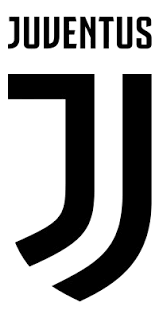
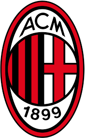
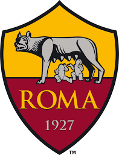

Lig Hakkında
Serie A, İtalyan futbol liglerinin en üst seviyesidir. Ana sponsoru TIM (Telecom Italia Mobile) adındaki İtalyan telekomünikasyon şirketidir. Avrupa ligleri içinde en zorlu liglerden biridir. 20 takım yer alır. O tarihe kadar bölgesel ligler devam ederken, Serie A 1898 yılında başlamıştır. Sezonu şampiyon bitiren takım scudetto unvanıyla anılır ve bir sonraki sezon formasında İtalyan bayrağının üç rengi olan bir arma takar. En başarılı olan takımlar Juventus, Inter ve Milan'dır. Bunların haricinde Roma, Napoli, Fiorentina ve Lazio tanınmış diğer takımlardır. Ayrıca, her 10 şampiyonluğa bir yıldız verilmektedir. Bundan dolayı Juventus'un 3, Inter'in 2 ve Milan'ın 1 yıldız takma hakkı vardır. Bir dönem "Küçük Dünya Kupası" olarak adlandırılan ligde Cristiano Ronaldo, Diego Maradona, Zinedine Zidane, Luís Figo, Ronaldo, Ronaldinho, Wesley Sneijder ve Zlatan Ibrahimović başta olmak üzere birçok dünya yıldızı oynamıştır. İtalyan futbolunun efsaneleri Francesco Totti, Gianluigi Buffon, Del Piero, Andrea Pirlo ve Paolo Maldini bu ligde uzun yıllar forma giymiştir. Dünya Kupaların en çok gol atan futbolcusu Miroslav Klose'de bir dönem bu ligde Lazio forması giymiştir. Juventus forması giydiği dönemde 27 futbolcu Dünya Kupası'nı kazanma başarısı göstermiştir ve bu aynı zamanda Juventus'un en çok Dünya Kupası şampiyonu çıkartan futbol kulübü olmasını sağlamıştır. Ligde yer alan takımlar Avrupa Kupalarında önemli ilklere imza atmıştır. Fiorentina takımı UEFA Kupa Galipleri Kupası'nı ilk kazanan takımdır. Lazio ise 1998-99 UEFA Kupa Galipleri Kupası'nı kazanarak bu kupayı son kez kazanan ekip olmuştur. Roma takımı ise UEFA Konferans Ligi'ni kazanan ilk kulüp olmayı başarmıştır. La Liga'nın ardından UEFA Avrupa Ligi'ni en çok kazanan ligdir. Milan kazandığı 7 Şampiyonlar Ligi zaferi ile Real Madrid'ten sonra bu kupayı en çok kazanan takımdır. Serie A, ayrıca Şampiyonlar Ligi'ni La Liga ve Premier League'den sonra en çok kazanan ligdir. Sezon sonunda puan durumunda son 3 sırayı alan takımlar Serie B'ye düşer. Lig kurulduğundan bu yana küme düşmeyen tek takım ise Inter'dir.
Ünlü Takımlar
Juventus
Stad : Allianz Stadium
AC Milan
Stad : San Siro (Stadio Giuseppe Meazza)
Inter

Stad : San Siro (Stadio Giuseppe Meazza)
AS Roma
Stad : Stadio Olimpico